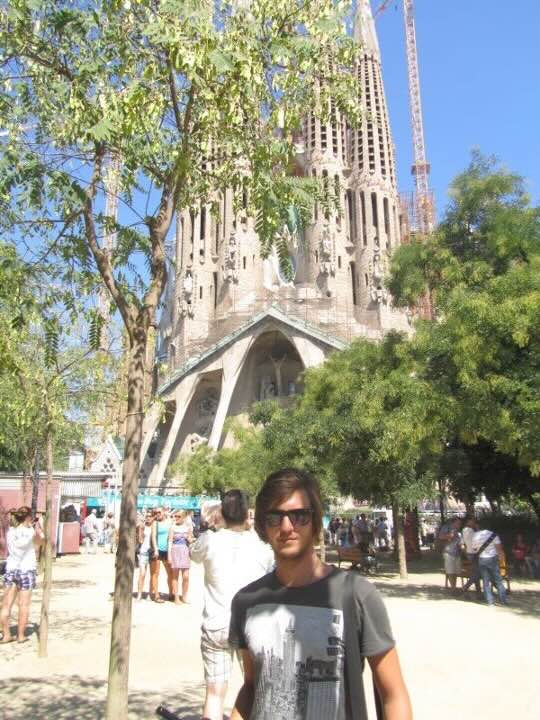

Introduction
Barcelona is a city that captures the heart with its iconic architecture, vibrant culture, and delicious cuisine. From the whimsical works of Antoni Gaudí to the bustling energy of La Rambla, every corner invites you to explore and immerse yourself in a unique blend of history and modern innovation.
A Brief History: Founded as a Roman settlement, Barcelona evolved through medieval times into a thriving port and commercial hub. Today, it stands as the capital of Catalonia, showcasing a proud heritage and a cosmopolitan spirit that resonates in every neighborhood.
My Barcelona Adventure
During my first visit, I was struck by how Barcelona seamlessly merges the old and the new. I remember wandering through the Gothic Quarter’s narrow streets, stumbling upon hidden squares and centuries-old churches, then hopping on a modern metro to reach the coast for a refreshing afternoon by the Mediterranean. One of my favorite memories is watching the sunset from Montjuïc Hill—where the city below glowed like a mosaic of lights against the sea.
There’s an undeniable creative energy here. Whether it’s Gaudí’s whimsical buildings, the street art in El Raval, or the lively tapas bars that stay open until late, Barcelona inspired me to embrace spontaneity. I even joined a local cooking class, learning how to make paella while sharing travel stories with new friends from around the world.
Top Attractions
- Sagrada Família – Gaudí’s unfinished masterpiece, a breathtaking basilica with soaring spires and kaleidoscopic stained glass.
- Park Güell – A whimsical public park filled with colorful mosaics, iconic serpentine benches, and panoramic views of the city.
- Gothic Quarter – The city’s medieval heart, where narrow streets reveal hidden plazas, Gothic churches, and centuries of history.
- La Rambla – A bustling boulevard lined with shops, street performers, and lively cafés—perfect for people-watching.
- Barceloneta Beach – A sandy stretch by the Mediterranean Sea, offering a laid-back vibe and vibrant nightlife.
Itinerary & Essentials
If you’re short on time or simply want a concise plan, here are five essential experiences in Barcelona:
- Morning at Sagrada Família: Book tickets in advance to avoid queues, then admire the play of light through its stained glass.
- Stroll through Park Güell: Enjoy Gaudí’s imaginative designs and sweeping city views.
- Tapas Crawl in El Born: Sample local flavors at small bars and meet fellow foodies.
- Sunset at Montjuïc Hill: Take the cable car or a leisurely hike to catch panoramic views as the city lights up.
- Night Out in the Gothic Quarter: Explore narrow alleys, vibrant plazas, and hidden cocktail bars for an unforgettable evening.
Fun Facts & Local Trivia
- Barcelona’s official languages are Spanish and Catalan—locals appreciate even a small effort to speak Catalan greetings.
- The Eixample district’s grid design was revolutionary for its time, aiming to reduce overcrowding and improve health.
- La Boqueria market on La Rambla dates back to the 13th century and remains a foodie’s paradise.
- Gaudí’s influence is everywhere—his unfinished Sagrada Família has been under construction for over 140 years.
- Barcelona’s beaches were revitalized for the 1992 Olympics—prior to that, the waterfront was largely industrial.
Food and Cuisine
Barcelona’s dining scene is a feast for the senses, offering everything from rustic tapas bars to avant-garde Michelin-starred restaurants. Here are some culinary highlights:
- Tapas: Small plates like patatas bravas, croquetas, and jamón ibérico are best enjoyed with friends over lively conversation.
- Paella: While paella hails from Valencia, Barcelona’s coastal twist on this rice dish is still worth savoring.
- Pinchos: These bite-sized snacks, often skewered with a toothpick, are popular in Basque-style bars.
- Seafood: Barceloneta is a prime spot to indulge in fresh catch, from grilled fish to octopus.
- Crema Catalana: A local dessert similar to crème brûlée, with a caramelized sugar crust and creamy interior.
Don’t forget to pair your meals with a glass of sangria or local cava. I once joined a midnight tapas crawl in El Born, hopping between bars as I savored new flavors and made new friends—an experience that truly captures Barcelona’s spirited nightlife.
Practical Information
Transportation
Barcelona’s public transport is both efficient and affordable, making it easy to explore:
- Metro & Buses: Single tickets cost about €2.40, or use a T-Casual pass for 10 rides at a reduced rate.
- Trams: Connect various districts, especially near the coastline.
- Bike Rentals: A fun way to explore the city’s flat neighborhoods and seaside promenades.
- Taxis & Ride-Sharing: Readily available, though traffic can be busy during peak hours.
From Airport to City
- Aerobús: Connects El Prat Airport to Plaça de Catalunya in about 35 minutes (~€5.90).
- Train (R2 Nord): Links Terminal 2 to city stations like Sants (~€4.20).
- Metro (L9 Sud): Direct from the airport, though you’ll need to transfer for central districts (~€5.15).
- Taxi: Around €30 to €35 to the city center, depending on traffic.
Accommodation
Popular neighborhoods include the Gothic Quarter for history, Eixample for Gaudí’s masterpieces, and Barceloneta for beach vibes. Prices range from budget hostels (~€20/night) to upscale hotels (€150+/night). Book ahead for peak seasons (May–August).
Budgeting
Expect to spend around €50–€100/day, covering food, local transport, and moderate sightseeing. Save by eating tapas for lunch and taking advantage of free-entry days at museums.
Tips and Recommendations
Do’s and Don’ts
- Do: Reserve tickets for major attractions (Sagrada Família, Park Güell) in advance.
- Don’t: Leave belongings unattended—pickpockets can be an issue in crowded areas.
- Do: Learn basic Spanish or Catalan phrases; locals appreciate the effort.
- Don’t: Dine too early—Spaniards typically eat dinner around 9–10 PM.
- Do: Explore neighborhoods on foot to discover hidden squares and street art.
Packing List
- Light, breathable clothing for warm days.
- Comfortable shoes for exploring on foot.
- Swimsuit for the beach.
- Reusable water bottle to stay hydrated.
- Umbrella or rain jacket for sudden showers.
Local Etiquette
Spanish and Catalan cultures value politeness and respect. Greet people with “Hola” or “Bon dia,” and don’t forget to say “Gracias” or “Merci” for small acts of kindness. Dress modestly when visiting churches or religious sites, and keep your voice down in residential areas, especially at night.
Follow My Adventures
Stay connected and follow my journey through the links below: